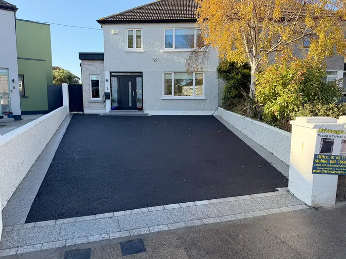
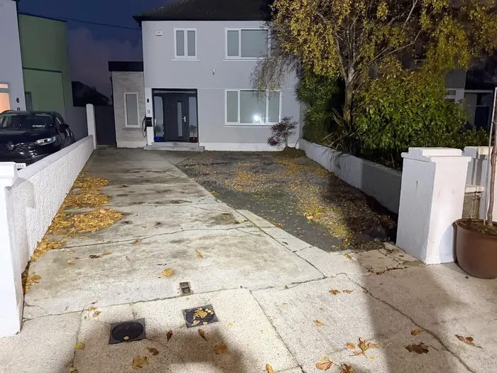
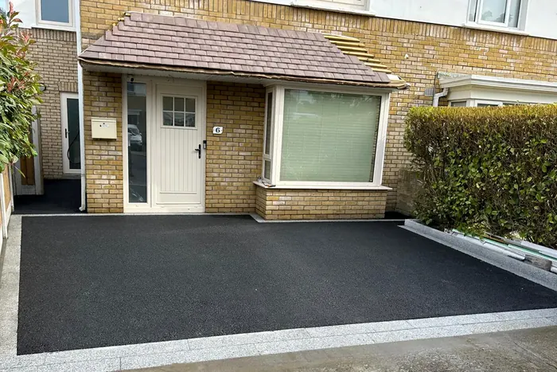
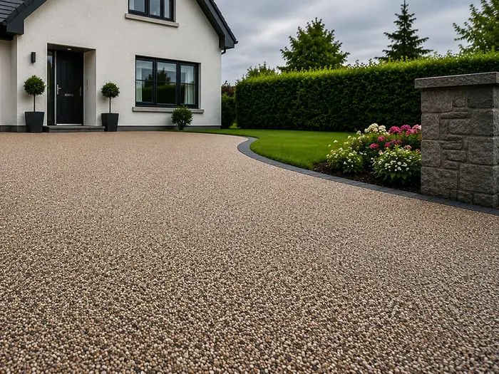
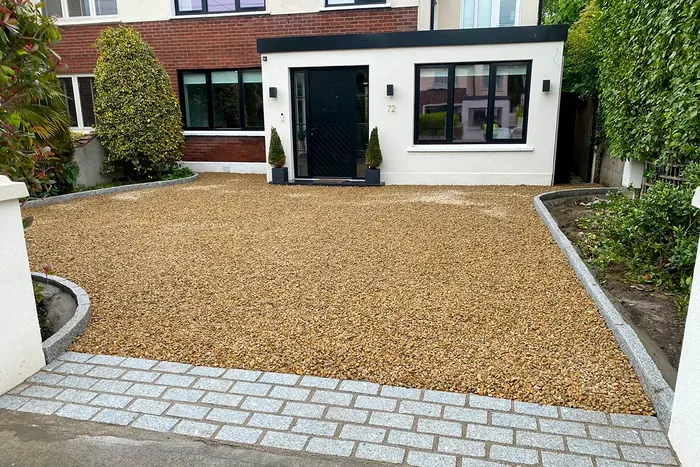
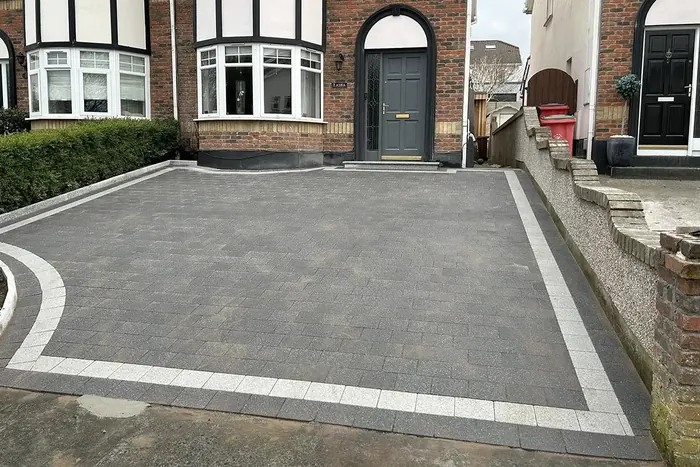
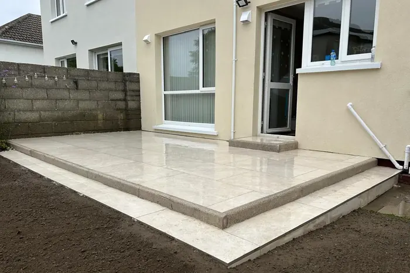

Dublin and Kildare, since 1972
Driveways built to last
Old concrete out, new surface in. Tarmac, resin, gravel, block paving and patios, laid by our own team.
5.0270 Google reviews

BeforeAfterDrag to compare. Perrystown, Dublin 12: concrete to SMA tarmac with silver granite edging, completed in 2 days.
- 270five-star Google reviews
- 7 yearswarranty
- 100%in-house, no subcontractors
- 1972the year we started
What we lay

Tarmac drivewaysA smooth, continuous surface laid on a properly prepared base.
Resin drivewaysLow maintenance, with a wide choice of colours and finishes.
Gravel drivewaysA natural stone finish in a choice of colours.
Block pavingColours, patterns and borders chosen to suit your home.
PatiosPorcelain or resin patios for relaxing, dining and entertaining.How we build
Prepare the ground
A quality driveway starts beneath the surface. We remove the existing surface and build a strong, properly compacted foundation.
Get the levels and drainage right
We set levels and falls so that rainwater is directed away from your property.
Install with care
Our own team lays the surface, so we control the quality of the work from preparation to completion.
Finishing touches
Edging, borders, steps and joints are completed carefully, and we leave your property clean and tidy.
Recent jobs
All before and after projectsStraight answers
How much does a new driveway cost in Dublin?
The price depends on the size of the driveway, your chosen finish and what needs to be done underneath it. Excavation, drainage, access and extras such as granite edging or steps can all affect the quote. We give you a price for your property after a site visit.
How long does it take to install a driveway?
Several of the installations in our Transformations gallery were completed in two days. Your schedule depends on the size of the job, the surface you choose and the preparation needed.
Do you take care of driveway drainage?
Yes. We look at where rainwater currently collects or flows, then plan the levels and falls for the new surface. Let us know if you already get puddles or water running towards your house.
Do you use subcontractors?
No. Our own team carries out the work, from removing the old surface and preparing the base to laying the new driveway and completing the finishing details.
Do you offer a free quote?
Yes. Tell us where you are based and what you have in mind. We arrange a site visit, talk through your options and give you a free quote with no obligation to proceed.
Where we work
- Tallaght
- Firhouse
- Rathfarnham
- Templeogue
- Knocklyon
- Lucan
- Clondalkin
- Dún Laoghaire
- Dundrum
- Citywest
- Swords
- Santry
- Coolock
- Clontarf
- Finglas
- Blanchardstown
All of north and south Dublin, and Kildare.
Get a free quote
Tell us where you are and what you have in mind. We visit, measure and give you a clear price.
086 106 0388Fully insured. 7 year warranty.